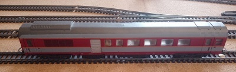
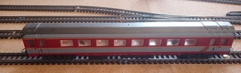
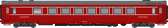
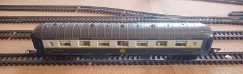
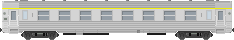
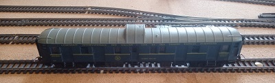

| Wagons | “Restaurant“ | A9 | A4Dtux | A8u |
|---|---|---|---|---|
| Compagnie | Trans Europe Express (T.E.E.) | Trans Europe Express (T.E.E.) | ||
| Livrée | Rouge | “Capitole” | Origine “Grand Confort” | Origine “Grand Confort” |
| N° de série | 51 87 88-80002-8 | 51 87 19-90 351-1 | 61 87 18-99 | 61 87 18-99 |
| Images | |
|
 |  |
| Images |  | |
||
| Images | |
|
|
|
| Marques | Jouef et Lima | Jouef | Lima | Lima |
| Nombre de wagons | 5 | 3 | 1 | 2 |
| Commentaires | ||||
| Wagons | A7D | "Pullman" | "Voiture-Lit" | D.E.V. "Inox" |
| Compagnie | Compagnie Internationale des Wagons-Lits (C.I.W.L.) | Compagnie Internationale des Wagons-Lits (C.I.W.L.) | ||
| Livrée | “Capitole” | |||
| N° de série | 5081 10-183835 | 5027 | ||
| Images | |
 | |
|
| Images | |
|
|
 |
| Images | |
|
|
|
| Marques | Lima | Jouef | Jouef et Troby | Jouef |
| Nombre de wagons | 1 | 1 | 6 | 3 |
| Commentaires | ||||
| Wagons | "Fourgon à bagages" | A4t4 | ||
| Compagnie | Compagnie Internationale des Wagons-Lits (C.I.W.L.) | |||
| Livrée | Voiture métallique Est | |||
| N° de série | 1247 | 5146 | ||
| Images |  | |
||
| Images | |
|||
| Images | |
|
||
| Marques | Jouef | Jouef | ||
| Nombre de wagons | 1 | 2 | ||
| Commentaires | Toujours en fin de convoit | Bande jaune de la 1ère classe |
↑↑ Cliquez sur les images pour avoir des informations sur les vraie wagons. ↑↑
 Cliquez ici pour revenir à l'accueil.
Cliquez ici pour revenir à l'accueil.